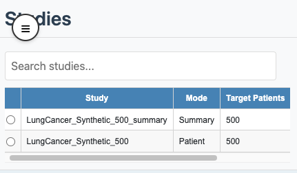
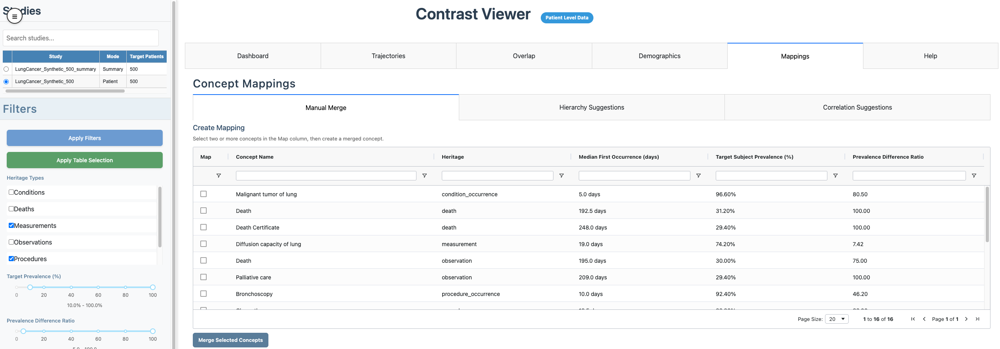
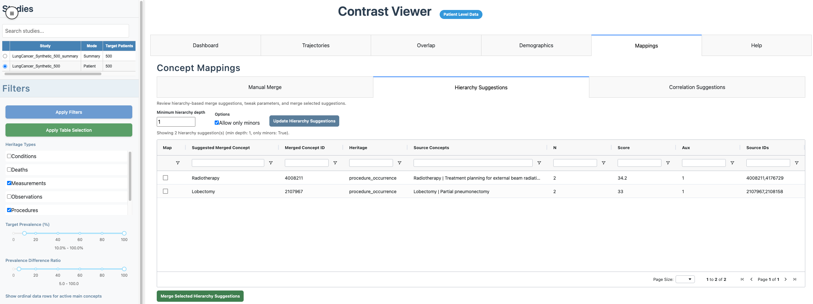

Graphical User Interface
a02_interface.RmdIntroduction
After running a study with createOutputFiles = TRUE (or
generating summaries with precomputeSummary()), launch the
viewer:
exampleDataDir <- system.file("example", "st", package = "CohortContrast", mustWork = TRUE)
CohortContrast::runCohortContrastViewer(
dataDir = exampleDataDir
)Select a study and mode
Use the Studies panel to pick a study. The badge next to the title confirms whether the data is loaded in Patient Level Data mode or Summary Mode.

Studies panel and data mode badge
Main workflow in the UI
Recommended order:
- Select study and confirm data mode.
- Set filters in the sidebar and click Apply Filters.
- Review the composite chart and table in Dashboard.
- Optionally refine visibility using the table Show column and click Apply Table Selection.
- Inspect Trajectories, Overlap, and Demographics.
- Use Mappings (patient mode) for concept merges and review mapping history.
Tabs
- Dashboard: central composite view with enrichment/prevalence, time-to-event, age, sex, and cluster prevalence columns.
- Trajectories: concept ordering shifts across clusters.
- Overlap: concept co-occurrence matrix and pairwise relationship table.
- Demographics: cohort, cluster, and concept-level age/sex summaries.
- Mappings: manual and suggestion-based concept merges (patient mode), plus mapping history.
- Help: in-app methods and control reference.
See also:
Mappings overview
In patient mode, the Mappings tab includes:
- Manual Merge: select main concepts in the Map column, create a merged concept, and apply.
- Hierarchy Suggestions: tune hierarchy parameters, click Update Hierarchy Suggestions, then merge selected rows.
- Correlation Suggestions: tune correlation parameters, click Update Correlation Suggestions, then merge selected rows.
- Mapping History: audited list of applied mappings.

Mappings tab with manual merge

Mappings tab with hierarchy and correlation
suggestions